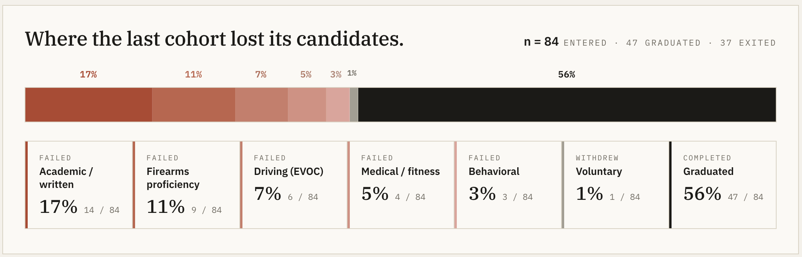

The problem
The original brief asked us to hire faster — more applicants, more bodies. Looking closer, the funnel was leaking: three distinct breakdowns across recruitment, onboarding, and the academy. I shifted the brief to 'why is the pipeline losing the strong candidates we already have?'

Methods used
Funnel analysis, segmentation, and dropout interviews
Eighteen months of applicant data showed that the 70% drop-off rate was due to three distinct breakdowns. Only 42 lateral applicants applied in 2024 because there was no targeted outreach to them.

I interviewed strong candidates who had quit between application and academy. They pointed to weeks of silence after background checks, confusing evaluation timelines, and no communication during the longest waits. Candidates were leaving because they thought the city had forgotten them.
Candidates were leaving because of poor communication and long wait times.
Targeted digital marketing tests
I tested recruitment tactics with SFPD recruiters at career fairs. Booths, keychains, and generic ads were missing Gen Z. Recruitment needed a sales motion.

Candidate journey mapping
I mapped the candidate journey across SFPD and DHR. More than half the handoffs had no named owner, no shared service expectation, and no common view of candidate progress. Leaders could see the system gap for the first time.

Shared hiring dashboard
A live, shared dashboard combined SFPD and DHR data — funnel KPIs alongside community-impact metrics, owned jointly by both agencies.



Actions to improve candidate experience during hiring
Each breakdown got its own remedy — one fix wouldn't have worked across all three.
- Recruitment adopted tailored sales strategies suited for today's audience.
- Onboarding was sped up by clearly assigning responsibility and sorting strong candidates to help them move faster.
- The academy was updated to meet the needs of today's recruits.
Demand and capacity analysis
The 10-person investigator team was the real bottleneck. Even with more applications coming in, that single team gated the entire pipeline. Mapping demand against capacity also showed shortages hit the neighborhoods and shifts the Mayor's priorities depended on most — which kicked off a wider conversation among city leaders about what the pipeline should be designed to produce.

Outcomes
The pipeline now produces officers at a sustainable rate — and the system is owned by the agencies running it.
- First net positive growth in sworn officers since the 2020 pandemic.
- Reframed the question from "hire faster" to "what should the pipeline produce" — now an active conversation in city leadership.
- Dashboard and service blueprint owned by SFPD and DHR, so the capability survives MOI's departure.
Context
Stakeholders. Core sponsors: Mayor's Public Safety Chief, SFPD Chief, Department of Human Resources leadership, Mayor's Office of Innovation Director. Core partners: SFPD recruiting team, DHR background-check team, SFPD Data Team, academy training staff.
Timeline. Feb 2025 – Oct 2025.